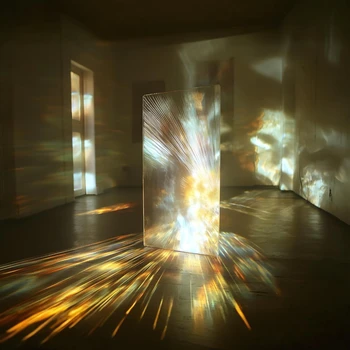
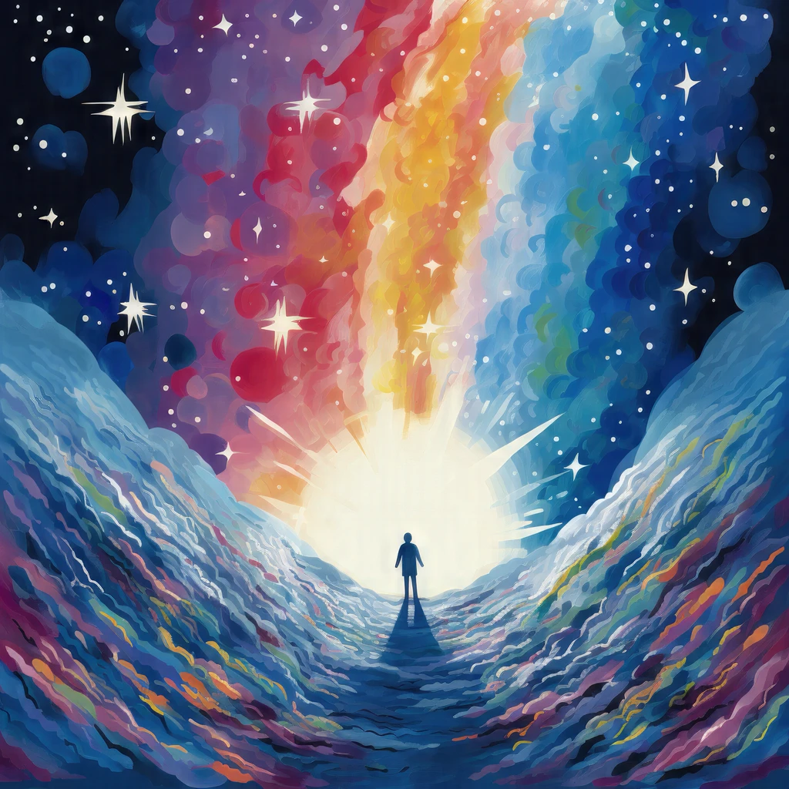

#Аудіо.
Терапія звуком. Бінауральні ритми, співочі чаші, ASMR, звуки природи… - обери бажаний енергетичний ефект.
#Пранаями.
Техніки дихання для відновлення балансу нервової системи.

#У стилі Майндфулнес.
Практики позбавляють звички негативно мислити, налагоджують здорові стосунки зі світом і собою.

#Медитативні казки для дітей.
Заряджають добром, надихають, вчать довіряти власним почуттям.

#Антистрес-допомога.
Вправи для швидкого опанування сильних емоцій.
#Дистанційні сеанси Рейкі.
Глибока енергетична практика, що занурює в цілющий спокій, де відбувається найкраще оздоровлення тіла, емоцій, життя. Робота з психосоматикою.

#Авторський аудіокурс.
На основі майндфулнес і статті-підказки для легкої корисної практики.